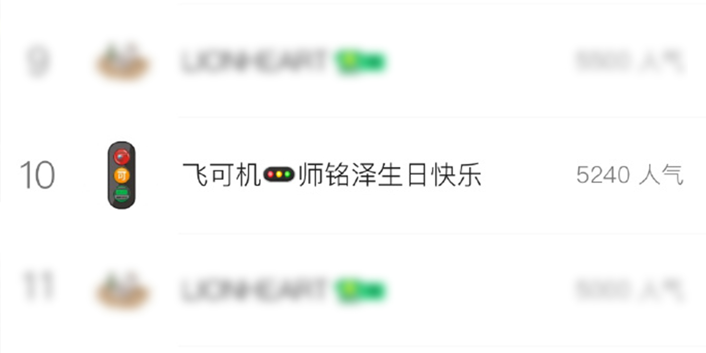

截止8日15时49分，新曲《i超月零》音源公开5小时49分后，人气值突破5240，并一直呈较好的上升趋势，再次刷新自身记录。恭喜妹妹们！！
Fake-J随即通过官方微博表示：“0周年快乐，托灯神怒那们的福和大家一同度过的每一瞬间都很幸福和感动。感谢灯神怒那发出的光芒照亮了我们前行的每一步，虽然很难用谢谢一句话全部表达出来，但总是很感谢，很感谢。我们以后也会有更多的日子在一起创造幸福的回忆！爱你们，灯神怒那们，马上见面吧!!”
Read More截止8日15时49分，新曲《i超月零》音源公开5小时49分后，人气值突破5240，并一直呈较好的上升趋势，再次刷新自身记录。恭喜妹妹们！！
Fake-J随即通过官方微博表示：“0周年快乐，托灯神怒那们的福和大家一同度过的每一瞬间都很幸福和感动。感谢灯神怒那发出的光芒照亮了我们前行的每一步，虽然很难用谢谢一句话全部表达出来，但总是很感谢，很感谢。我们以后也会有更多的日子在一起创造幸福的回忆！爱你们，灯神怒那们，马上见面吧!!”
Read More据悉，FaKe-J成员们日前在集体团建时回顾过往参与过的选秀节目时，成员之一BBJ发现《Can't Stop》舞台是由MG公司旗下当红艺人贾跳舞和范RAP表演，是他们在该节目的第一个竞演舞台。
该舞台也是贾跳舞和范RAP在这个节目中的首次合作，虽然部分舞蹈动作相对复杂并且十分考验选手们的默契。但两位艺人凭借自己出色的业务能力和惊人的默契，非常完美的展示了舞台，范RAP更是展现了作为Vocal的实力。
妹妹们惊呼：请继续KSWL！请继续Keep Shining with Love！
Read More12月15日，同公司师兄酸梅汁最新自拍在微博释出，据悉，此次自拍照是酸梅汁新剧《韫色过浓》的探班会造型，酸梅汁在新剧中饰演一位娱乐圈明星徐嘉玮。
然而由于拍照姿势过于清奇以及B-King，FKJ成员（特指BBJ和DFF）私下聊天时候笑成一团，但不知由于时差关系（三位妹妹分别活跃在北美、大陆娱乐圈），LKK一直未出现，图上为BBJ和DFF呼唤LKK通网的全记录。
Read More某日，FKJ成员们正在交流最近的歌单，一位成员分享了最近听的歌，来自城里弄先生翻唱的路径图先生的《谁》。
但由于城里弄先生只即兴翻唱了四句，妹妹们找了原版来听。并对其中的歌词和旋律深有感触。相信深有感触的妹妹们一定能带着这样的感触认真生活，能创造出更多精彩好听的作品。
并没要求有谁能体会，更别擅作慈悲。同情才不会给我安慰，只会让我流泪。
Read More某某日，妹妹们又在一起交流最近听到的新歌，路径图先生的新歌于日前释出，新专辑主打为《APPLE》，成员DFF对这首歌曲感受颇深，并为此撰写了千字长文《不是良人》。
“对啊对啊我不难过，如同虚设泪才掉了几颗，关于你的画面全都忘了。”这是小飞。
“我消费掉你的浪漫天真，你就当我只是身体冰冷越温暖的火焰就越残忍，越逼真的画面人越犯困。你活在我清晨睡意朦胧，你活在我关灯清醒造梦；你活在我笑了情绪翻涌，你活在我哭了人去楼空。”这是帅红。
他们都不是彼此的良人。
Read More